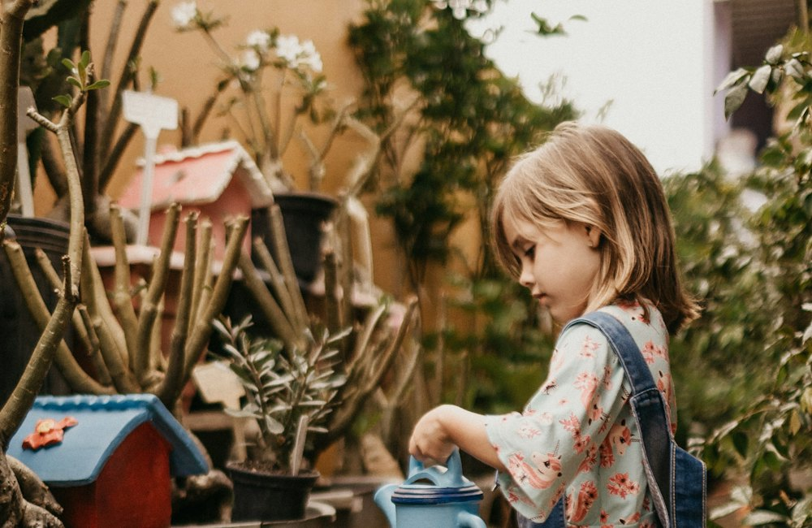

Être parent, plus sereinement
Sommeil, repas, colères, écrans, école : des repères clairs et bienveillants, et des outils pratiques pour vous simplifier la vie, de la naissance à l'adolescence.
Votre journée de parent ☀️
Chargement de votre espace…
Nouveau : à essayer ce soir ✨

L'histoire du soir dont il est le héros
Son prénom, son animal préféré, un lieu magique… et la lecture à voix haute.
Lire →
Le jeu des prénoms
Coups de cœur, et vos prénoms en commun avec l'autre parent.
Lire →
Vrai ou faux ?
10 idées reçues sur les enfants. Saurez-vous faire 10/10 ?
Lire →
Le journal de ses premières fois
Une frise de ses plus beaux moments, avec son âge exact.
Lire →
Le suivi de bébé
Tétées, biberons, sommeil, couches : un geste suffit.
Lire →
Mon espace et mes badges
Graines, niveaux, 17 badges à débloquer et le défi du jour.
Lire →Les conseils les plus lus

Faire dormir bébé
Rituel, rythme, sécurité du couchage : 10 conseils qui marchent vraiment.
Lire →
La diversification
Quand commencer, quoi donner, en quelle quantité.
Lire →
Les colères de 2 à 6 ans
Pourquoi elles arrivent, que faire pendant, et comment les prévenir.
Lire →
Écrans : quel âge, combien ?
Les repères officiels par âge, et des idées pour remplacer la tablette.
Lire →
Les premiers mots
Comment le langage se développe et comment l'encourager.
Lire →
La confiance en soi
8 attitudes qui aident un enfant à croire en lui.
Lire →
Pourquoi bébé pleure
Décoder ses pleurs et l'apaiser, sans culpabiliser.
Lire →
Il ne mange pas !
10 astuces pour des repas sans bras de fer.
Lire →
Parler avec son ado
9 conseils pour garder le lien.
Lire →
Bébé arrive bientôt ?
La liste de naissance essentielle, sans superflu, à cocher au fur et à mesure. Elle reste enregistrée sur votre téléphone.
Ouvrir ma liste →Des outils pour vous simplifier la vie
Calculateur de sommeil
Combien d'heures, combien de siestes, à quelle heure le coucher ?
Ouvrir →Calendrier de diversification
Ce que bébé peut manger, mois par mois.
Ouvrir →Budget bébé
Combien coûte la première année, selon vos choix.
Ouvrir →Idée d'activité au hasard
Un enfant qui s'ennuie ? Tirez une idée adaptée à son âge.
Ouvrir →Argent de poche
Combien donner selon l'âge, et comment.
Ouvrir →Repères écrans
Ce que recommandent les experts pour son âge.
Ouvrir →
Tableau de routine
Matin ou soir, avec son prénom, prêt à imprimer.
Ouvrir →Questions fréquentes
Les conseils de ce site sont-ils fiables ?
Ils reprennent les recommandations publiques (Santé publique France, Haute Autorité de santé, OMS, Société française de pédiatrie, commission d'experts « Enfants et écrans »). Ils ne remplacent pas un avis médical : en cas de doute, parlez-en à votre médecin, à votre sage-femme ou à la PMI.
Pourquoi des liens vers Amazon ?
Quand vous achetez via ces liens, le site touche une petite commission, sans surcoût pour vous. C'est ce qui permet de garder le site gratuit. Nous ne recommandons que des types de produits réellement utiles.
Mes réponses aux outils sont-elles enregistrées ?
Non. Les calculs se font dans votre navigateur. Votre liste de naissance, vos favoris et vos préférences (thème, taille du texte) sont gardés uniquement sur votre appareil.
Comment garder un article pour plus tard ?
Touchez « ❤ Enregistrer » en haut de chaque article : il apparaît dans vos favoris (le cœur en haut de l'écran).
C'est quoi, les graines 🌱 ?
Chaque fois que vous lisez un article, utilisez un outil ou relevez le défi du jour, vous gagnez des graines. Elles font monter votre niveau (de Graine à Forêt) et débloquent des badges. C'est juste pour le plaisir, et pour vous rappeler que chaque petit geste de parent compte.